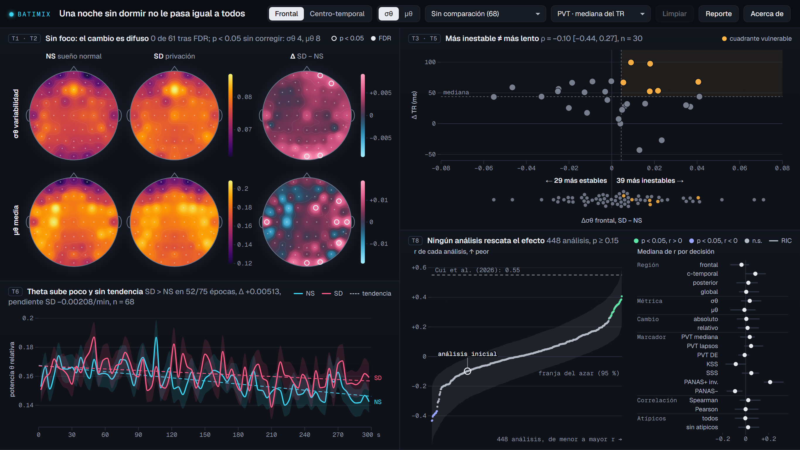

1Introducción
La privación de sueño no afecta a todos por igual: las diferencias entre personas en el deterioro son sistemáticas y de tipo rasgo [1]. La potencia theta (4 a 8 Hz) del EEG en vigilia aumenta con la presión de sueño [2], aunque también refleja control cognitivo [3], y las personas vulnerables muestran una theta más alta y más variable [4]. Con el conjunto público OpenNeuro ds004902 [5, 6], Cui et al. [7] informaron que el aumento de la variabilidad entre épocas de la theta relativa tras la privación se correlaciona con el enlentecimiento en la tarea de vigilancia psicomotora (PVT): ρ = 0.544 en la región frontal y 0.558 en la centro-temporal, con n = 28.
Dos problemas dificultan usar ese resultado. El promedio del grupo oculta a las personas, y una correlación con n ≈ 30 obtenida por un solo camino analítico es frágil: otras decisiones igual de razonables pueden cambiar la conclusión [8, 9], y en EEG esa flexibilidad está documentada [10, 11].
Nuestra audiencia es un investigador en fisiología del sueño que hace screening exploratorio sobre datos públicos. BATIMIX le ayuda a decidir qué canales, regiones y covariables merecen una prueba formal; no es diagnóstica ni predictiva. Nuestras contribuciones son:
- un explorador enlazado, en una sola vista, de la vulnerabilidad individual a la privación de sueño en EEG de reposo;
- una vista explorable de curva de especificación (multiverso) con inferencia conjunta por permutación, enlazada a la dispersión de personas, aplicada a una asociación entre EEG y conducta;
- un reanálisis honesto que muestra que la asociación publicada no resiste la variación analítica en este conjunto de datos público.
2Trabajo relacionado
Vistas coordinadas y narrativa. BATIMIX sigue el principio de vista general, filtro y detalle bajo demanda [12] y coordina sus paneles por enfoque y enlace [13]. Sus títulos de panel enuncian el hallazgo, a la manera del género de gráfico anotado de Segel y Heer [14], sin pasos ni desplazamiento. Para encuadrar un resultado nulo seguimos a Hullman y Diakopoulos [15] y mostramos la incertidumbre aunque debilite la historia [16].
Multiverso y curva de especificación. El análisis de multiverso repite un análisis sobre todos los conjuntos de datos procesados de forma razonable [8]; la curva de especificación ordena los resultados junto a sus decisiones y añade inferencia conjunta [9]. Dragicevic et al. [17] llevan el multiverso a artículos explorables, Boba [18] separa la inferencia de la exploración, y Del Giudice y Gangestad [19] advierten que mezclar opciones no equivalentes puede ocultar efectos reales. Tomamos de ellos el ordenamiento, el resumen por decisión y la banda nula, y añadimos el enlace de cada especificación con las personas que la producen.
Flexibilidad analítica en EEG. Filtros, corrección ocular y referencia cambian los efectos en potenciales evocados [10]; los rasgos espectrales de baja frecuencia son los más sensibles al preprocesamiento [11], aunque más preprocesamiento no siempre mejora el resultado [20], y un multiverso de biomarcadores de EEG de reposo mostró una robustez limitada [21].
3Datos y métodos
3.1Datos
Usamos OpenNeuro ds004902 v1.0.8 [5, 6] (CC0): 71 participantes en un diseño intra-sujeto contrabalanceado, tras sueño normal (NS) y tras 24 a 30 h de privación de sueño (SD), con EEG de 61 electrodos a 500 Hz y referencia FCz, en reposo con ojos abiertos durante 5 min. El n efectivo es de 68 de 71 personas con EEG pareado (hay 5 registros corruptos en origen). Entre ellas, hay cambio conductual para 30 en el PVT, 32 en la escala de somnolencia de Karolinska (KSS), 33 en la de Stanford (SSS) y 65 en la de afecto positivo y negativo (PANAS).
3.2Procesamiento y estadística
El preprocesamiento (Semana 6) aplica notch de 50 Hz, pasabanda de 1 a 40 Hz y detección de canales malos por z de la log-varianza con interpolación esférica, sin ICA ni re-referencia, y divide cada registro en 75 épocas de 4 s. La theta relativa de cada época y electrodo es la potencia de 4 a 8 Hz dividida por la de 1 a 40 Hz (Welch, sin unidades). Por sujeto, condición y electrodo, σθ es su desviación estándar entre épocas y μθ, su media; el cambio es Δ = SD − NS. Las ROI frontal (16 electrodos) y centro-temporal (28) siguen a Cui et al. [7]. Por electrodo usamos una t pareada con y sin FDR de Benjamini y Hochberg sobre 61 pruebas [22]; para la conducta, la ρ de Spearman con IC 95 % (Fisher), y para la dinámica, la media y el error estándar (EE) por época.
3.3Multiverso e inferencia conjunta
Las 448 especificaciones combinan 4 regiones (frontal, centro-temporal, posterior y global), 2 métricas (σθ, μθ), 2 formas de cambio (absoluto, relativo), 7 marcadores (PVT mediana del tiempo de reacción o TR, PVT lapsos, PVT desviación estándar del TR, KSS, SSS, PANAS positivo invertido y PANAS negativo), 2 correlaciones (Spearman, Pearson) y 2 reglas de atípicos (todos, o excluir |z| > 2.5). Todo se orienta a deterioro: la hipótesis de Cui et al. predice r > 0.
Para la inferencia conjunta adaptamos el procedimiento de Simonsohn et al. [9] a datos observacionales sin covariables: en cada una de 2000 permutaciones se barajan las filas conductuales entre los 68 sujetos, con la misma permutación para todas las especificaciones (así se conserva su dependencia), y se recalcula el multiverso entero, incluida la regla de atípicos. Los estadísticos son la mediana de r, el número de análisis con p < 0.05 y r > 0, y la Z de Stouffer, con p = (1 + curvas nulas al menos tan extremas) / (1 + 2000). La prueba principal usa solo σθ (224 análisis), la hipótesis de Cui et al., porque mezclar medidas no equivalentes es arriesgado [19]. La banda nula une los percentiles 2.5 y 97.5 de las curvas nulas ordenadas. Todo se precalcula en Python con semilla fija; el Δσθ frontal recalculado coincide con el de la Semana 6 (diferencia máxima 2.8 × 10−17) y el análisis inicial (frontal, σθ, absoluto, PVT mediana, Spearman, todos) reproduce ρ = −0.099.
4Diseño de la visualización
4.1Disposición en una sola vista
La aplicación (D3.js) ocupa una sola pantalla con tema oscuro de instrumento científico, sin scrollytelling, animaciones ni textos de instrucciones (Fig. 2). Una única cabecera reúne el título y todos los controles: región (frontal o centro-temporal), métrica (σθ o μθ), grupo, marcador del eje Y, Limpiar y Acerca de. Debajo, cuatro paneles llenan 1365 × 768 sin desplazamiento, sin espacio entre ellos (solo líneas de 1 px), y el título de cada uno enuncia su hallazgo. Introducción, glosario, tareas, método, limitaciones, tabla de datos y créditos van en Acerca de.
4.2Paneles y codificaciones
(a) Una matriz de 2 × 3 mapas interpola los 61 electrodos: columnas NS, SD y Δ (SD − NS), filas σθ y μθ del grupo activo. Los anillos de p < 0.05 y el relleno de FDR aparecen solo en los mapas Δ de las 68 personas. (b) La dispersión de vulnerabilidad ubica a cada persona por su Δ en la métrica y la región globales (eje x) y por su cambio en el marcador del eje Y; las medianas delimitan el cuadrante vulnerable y el título da ρ con su IC y su n. Debajo, una franja de enjambre muestra a las 68 personas, anotada «29 más estables / 39 más inestables». (c) Cinco minutos traza la theta frontal media por época en NS y SD, con ±EE. (d) El multiverso dibuja los 448 análisis sobre la franja del 95 % del azar, con la referencia 0.55 de Cui et al. y el análisis inicial en un anillo (Fig. 3); el IC de cada análisis va en el tooltip. A su lado, un gráfico de puntos da la mediana y el rango intercuartílico de r por opción.
NS es cian (#3DD6F5) y SD magenta (#FF5C8A). NS y SD comparten por fila una escala secuencial inferno (entre filas en el modo A/B); Δ usa una divergente cian, oscuro, magenta, con el cero neutro fundido con el fondo. El ámbar marca el cuadrante vulnerable, y en el multiverso los significativos con r > 0 van en verde menta, los de r < 0 en lavanda y el resto en gris. La tipografía es Geist y Geist Mono. El equipo eligió el tema oscuro tras la crítica: los mapas se leen como campos luminosos y la interfaz retrocede para dejar el foco en los datos.

4.3Interacciones y coordinación
El lazo libre en la dispersión define un grupo; un clic en dos puntos elige a las personas A y B (un tercero reemplaza al más antiguo), y Esc o Limpiar vuelven al estado inicial. El selector de grupo de la cabecera ofrece subconjuntos predefinidos (por ejemplo, sexo, orden de sesión, PSQI o cuadrante vulnerable). La matriz de mapas, la dinámica y la ρ del título se recalculan sobre el grupo activo; con A y B elegidos, las filas de la matriz pasan a ser esas dos personas en la métrica de la cabecera, con escalas compartidas. En el multiverso, un clic en una fila de la mediana por decisión filtra los análisis, y un clic (o las flechas y Enter) en un punto de la curva carga ese análisis en la dispersión.
4.4Justificación y tareas
Tres principios guían el diseño: personas antes que promedios [1]; incertidumbre siempre visible (n, IC 95 %, bandas de EE y banda nula) [16], y exploración separada de la inferencia, como en Boba [18]: la prueba conjunta se calcula sobre el multiverso completo predefinido. La Tabla 1 asigna las tareas, en la tipología de Brehmer y Munzner [23], a los paneles: el lazo es select, las columnas NS, SD y Δ apoyan compare, y la curva de especificación combina discover, explore y summarize con derive (estadísticos nulos) y arrange (orden por efecto).
| Tarea (pregunta) | Panel que la responde |
|---|---|
| T1 Localizar (Q1) | a: columna Δ con marcas de p y FDR |
| T2 Comparar métricas (Q2) | a: filas σθ y μθ |
| T3 Identificar vulnerables (Q3) | b: cuadrante, lazo y franja |
| T4 Comparar (Q4) | a: matriz por grupo; filas A y B |
| T5 Correlacionar (Q5) | b: eje Y y ρ con n, por grupo |
| T6 Describir tendencia (Q6) | c: media ± EE por época |
| T7 Filtrar por moderador (Q7) | cabecera: selector de grupo |
| T8 Verificar robustez | d: multiverso |
5Resultados: caso de estudio
Cada respuesta se lee en el título o la franja de un panel de la Fig. 2.
5.1¿Todos cambian igual? (T3, T4)
No. El Δσθ frontal medio es +0.00431, con una desviación estándar entre personas de 0.0231, más de cinco veces la media: 39 personas se vuelven más inestables y 29 más estables (franja de la Fig. 2b). En la región centro-temporal la media es +0.00266.
5.2¿Dónde cambia, en la cabeza? (T1, T2)
En σθ, 4 de 61 electrodos tienen p < 0.05 sin corregir (AF8, Fp2, O2 y Oz) y ninguno sobrevive a FDR; en μθ son 8 de 61 (C6, F8, FC2, O2, Oz, P8, T7 y T8), también con 0 tras FDR. El cambio es difuso (Fig. 2a), sin el foco frontal que sugiere la literatura [2].
5.3¿Cuándo, en los cinco minutos? (T6)
La theta frontal en SD supera a NS en 52 de 75 épocas (diferencia media +0.00513), pero su tendencia es de −0.00208 por minuto: el efecto es leve y sostenido, sin aumento a lo largo del registro (Fig. 2c).
5.4¿Más inestable es más lento? (T5)
Con la especificación de Cui et al. (frontal, σθ, Spearman, Δ frente a Δ), pero con nuestro preprocesamiento y la variable conductual pública, obtenemos ρ = −0.10 [−0.44, 0.27], n = 30, entre el Δσθ frontal y el Δ de la mediana del TR del PVT: el intervalo incluye el cero y excluye los valores publicados. Hay 6 personas en el cuadrante vulnerable. Con los lapsos del PVT, preferibles a la mediana del TR según Basner y Dinges [24], ρ = −0.01 [−0.37, 0.35], n = 30.
5.5¿Depende de cómo se analiza? (T8)
¿Es este nulo un accidente de nuestra especificación? (Fig. 3, Tabla 2). Con solo σθ (224 análisis), ningún análisis es significativo y la mediana de r es +0.035 (p = 0.32). Con los 448, 26 análisis son significativos con r > 0, pero el 95 % del azar llega hasta 56 (p = 0.15), y ninguna prueba conjunta baja de p = 0.15. Las Z de Stouffer (+4.57 y +3.13) no son significativas porque los análisis están muy correlacionados y su nula por permutación es mucho más ancha que una normal estándar. Los r van de −0.43 a +0.41: ninguno alcanza el valor publicado, y el análisis inicial (ρ = −0.099) queda en la parte baja de la curva.
En la mediana por decisión destaca el PANAS positivo invertido, y al filtrar se ve que los 26 significativos lo usan todos, con μθ: más aumento de la potencia theta, mayor caída del afecto positivo. Es una pista exploratoria, no un hallazgo: surge tras mirar 448 análisis y la prueba conjunta no la respalda.
| Estadístico | Solo σθ (224) | Completo (448) |
|---|---|---|
| Mediana de r | +0.035 (p = 0.32) | +0.012 (p = 0.42) |
| Significativos, r > 0 | 0 | 26 (azar: hasta 56; p = 0.15) |
| Z de Stouffer | +4.57 (p = 0.22) | +3.13 (p = 0.33) |
| Decisión | Cui et al. [7] | BATIMIX |
|---|---|---|
| Referencia | promedio | FCz, sin re-referencia |
| ICA | sí | no |
| Filtro | 1 a 30 Hz | 1 a 40 Hz, notch 50 Hz |
| Denominador θ relativa | 4 a 30 Hz | 1 a 40 Hz |
| Rechazo de épocas | > 200 µV | no |
| TR del PVT | sin < 100 ni > 2000 ms | columna pública |
| n con PVT | 28 | 30 |
5.6La no replicación de Cui et al.
No replicamos la asociación publicada, y no por una especificación desafortunada. Aun así no refutamos a Cui et al.: los dos análisis difieren en decisiones que el multiverso todavía no varía (Tabla 3). Sin ICA ni rechazo de épocas, los parpadeos con ojos abiertos pueden alterar la theta frontal y su variabilidad, y los rasgos espectrales de baja frecuencia son los más sensibles al preprocesamiento [11]. Además, con n = 30 la probabilidad de detectar ρ = 0.3 es ≈ 0.35. Por último, Xiang et al. [5, p. 4] parecen asignar los valores t del PVT a indicadores distintos de los del diccionario del conjunto; nuestros datos siguen el diccionario (27 de 30 personas más lentas sin dormir).
6Discusión
Lecciones y fortalezas. Un resultado nulo necesita tanta evidencia visual como uno positivo. Un único ρ = −0.10 invitaba a sospechar de la especificación; la curva muestra todo el espacio razonable frente al azar, y el valor publicado queda fuera de él. El enlace con la dispersión convierte cada r en personas que se pueden inspeccionar, y la matriz de mapas compara métricas y condiciones sin cambiar de estado. Tras la crítica quitamos el recorrido y las instrucciones: cada título enuncia su hallazgo y el contexto pasó a Acerca de. El cálculo es reproducible (semilla fija y control de consistencia) y el marco sirve para otras asociaciones entre EEG y conducta en diseños pareados.
Limitaciones. El multiverso solo varía decisiones posteriores al preprocesamiento: la referencia, la ICA y el denominador, las diferencias más probables con Cui et al., aún no son dimensiones. Pearson y Spearman son casi redundantes y pueden inflar la apariencia de consistencia, y la Z de Stouffer pondera igual a todos los análisis aunque el n cambie por marcador (PVT 30, KSS 32, SSS 33, PANAS 65). La theta de reposo no tiene por qué generalizarse a la tarea [3]. La detección de canales malos es heurística y los mapas de grupos pequeños son ruidosos. La curva muestra el IC de cada análisis solo en el tooltip, y el tema oscuro aún no se ha probado en proyección ni impreso. Sobre todo, falta validar el diseño con la audiencia, el nivel más externo del modelo anidado de Munzner [25]: en la Semana 13 haremos una prueba informal con 3 a 5 usuarios que resuelvan T1 a T8 pensando en voz alta.
7Trabajo futuro y conclusión
En la Semana 13 añadiremos al multiverso un pipeline con referencia promedio e ICA al estilo de Cui et al., un criterio de vulnerabilidad por lapsos del PVT y un resumen de moderadores, y desplegaremos la aplicación en GitHub Pages. Descartamos una vista de conectividad funcional (matriz de decisión: sin conectividad 29/40, frente a 24, 22 y 17 de las alternativas): el estudio más parecido no halló cambios con ojos abiertos [26], el pipeline actual (FCz, sin ICA, sin EOG) no sirve para conectividad y 1830 aristas con n = 68 exigen dz ≈ 0.65. Si se retoma: wPLI debiased en theta, coherencia imaginaria como sensibilidad y 3 ROI con permutación pareada y Holm, sobre 6.11 GB de registros con ojos abiertos.
En conclusión, sin dormir, la theta de cada persona se mueve en direcciones distintas y, en este conjunto público, ese cambio no predice de forma robusta quién se deteriora; la única pista apunta al ánimo (PANAS positivo), no a la vigilancia (PVT). Una curva de especificación enlazada a las personas detrás de cada estimación es una forma concreta de reportar un resultado nulo con honestidad.
Agradecimientos
Curso DS5343 Visualización de Datos (UTEC, 2026-2), Prof. Germain García-Zanabria. Responsabilidades: J. Gurbillon (mapas, Q1 y Q2), A. Coa (dinámica y moderadores, Q6 y Q7), P. Medrano (vulnerabilidad, convergencia y multiverso, Q3 a Q5). Código: github.com/Andrea-Coa/data-visualization-project. Redactado con asistencia de IA (Claude) desde los documentos del equipo; pendiente de revisión por los autores.
Referencias
[1]H. P. A. Van Dongen, M. D. Baynard, G. Maislin, and D. F. Dinges, "Systematic interindividual differences in neurobehavioral impairment from sleep loss: Evidence of trait-like differential vulnerability," Sleep, vol. 27, no. 3, pp. 423-433, 2004. doi: 10.1093/sleep/27.3.423
[2]L. A. Finelli, H. Baumann, A. A. Borbély, and P. Achermann, "Dual electroencephalogram markers of human sleep homeostasis: Correlation between theta activity in waking and slow-wave activity in sleep," Neuroscience, vol. 101, no. 3, pp. 523-529, 2000. doi: 10.1016/S0306-4522(00)00409-7
[3]S. Snipes, E. Krugliakova, E. Meier, and R. Huber, "The theta paradox: 4-8 Hz EEG oscillations reflect both sleep pressure and cognitive control," J. Neurosci., vol. 42, no. 45, pp. 8569-8586, 2022. doi: 10.1523/JNEUROSCI.1063-22.2022
[4]E. C.-P. Chua et al., "Sustained attention performance during sleep deprivation associates with instability in behavior and physiologic measures at baseline," Sleep, vol. 37, no. 1, pp. 27-39, 2014. doi: 10.5665/sleep.3302
[5]C. Xiang, X. Fan, D. Bai, K. Lv, and X. Lei, "A resting-state EEG dataset for sleep deprivation," Sci. Data, vol. 11, Art. no. 427, 2024. doi: 10.1038/s41597-024-03268-2
[6]C. Xiang, X. Fan, D. Bai, K. Lv, and X. Lei, "A resting-state EEG dataset for sleep deprivation," OpenNeuro, ds004902, version 1.0.8, 2025. doi: 10.18112/openneuro.ds004902.v1.0.8
[7]Z. Cui, T. Xie, Y. Zhou, P. Gong, X. Zhang, and P. Wang, "Exploring the differences in neural oscillation mechanisms before and after sleep deprivation," Front. Neurosci., vol. 20, Art. no. 1910878, 2026. doi: 10.3389/fnins.2026.1910878
[8]S. Steegen, F. Tuerlinckx, A. Gelman, and W. Vanpaemel, "Increasing transparency through a multiverse analysis," Perspect. Psychol. Sci., vol. 11, no. 5, pp. 702-712, 2016. doi: 10.1177/1745691616658637
[9]U. Simonsohn, J. P. Simmons, and L. D. Nelson, "Specification curve analysis," Nat. Hum. Behav., vol. 4, no. 11, pp. 1208-1214, 2020. doi: 10.1038/s41562-020-0912-z
[10]P. E. Clayson, S. A. Baldwin, H. A. Rocha, and M. J. Larson, "The data-processing multiverse of event-related potentials (ERPs): A roadmap for the optimization and standardization of ERP processing and reduction pipelines," NeuroImage, vol. 245, Art. no. 118712, 2021. doi: 10.1016/j.neuroimage.2021.118712
[11]K. A. Robbins, J. Touryan, T. Mullen, C. Kothe, and N. Bigdely-Shamlo, "How sensitive are EEG results to preprocessing methods: A benchmarking study," IEEE Trans. Neural Syst. Rehabil. Eng., vol. 28, no. 5, pp. 1081-1090, 2020. doi: 10.1109/TNSRE.2020.2980223
[12]B. Shneiderman, "The eyes have it: A task by data type taxonomy for information visualizations," in Proc. 1996 IEEE Symp. Visual Languages, 1996, pp. 336-343. doi: 10.1109/VL.1996.545307
[13]A. Buja, J. A. McDonald, J. Michalak, and W. Stuetzle, "Interactive data visualization using focusing and linking," in Proc. Visualization '91, 1991, pp. 156-163. doi: 10.1109/VISUAL.1991.175794
[14]E. Segel and J. Heer, "Narrative visualization: Telling stories with data," IEEE Trans. Vis. Comput. Graphics, vol. 16, no. 6, pp. 1139-1148, 2010. doi: 10.1109/TVCG.2010.179
[15]J. Hullman and N. Diakopoulos, "Visualization rhetoric: Framing effects in narrative visualization," IEEE Trans. Vis. Comput. Graphics, vol. 17, no. 12, pp. 2231-2240, 2011. doi: 10.1109/TVCG.2011.255
[16]J. Hullman, "Why authors don't visualize uncertainty," IEEE Trans. Vis. Comput. Graphics, vol. 26, no. 1, pp. 130-139, 2020. doi: 10.1109/TVCG.2019.2934287
[17]P. Dragicevic, Y. Jansen, A. Sarma, M. Kay, and F. Chevalier, "Increasing the transparency of research papers with explorable multiverse analyses," in Proc. CHI Conf. Human Factors in Computing Systems, 2019, pp. 1-15. doi: 10.1145/3290605.3300295
[18]Y. Liu, A. Kale, T. Althoff, and J. Heer, "Boba: Authoring and visualizing multiverse analyses," IEEE Trans. Vis. Comput. Graphics, vol. 27, no. 2, pp. 1753-1763, 2021. doi: 10.1109/TVCG.2020.3028985
[19]M. Del Giudice and S. W. Gangestad, "A traveler's guide to the multiverse: Promises, pitfalls, and a framework for the evaluation of analytic decisions," Adv. Methods Pract. Psychol. Sci., vol. 4, no. 1, 2021. doi: 10.1177/2515245920954925
[20]A. Delorme, "EEG is better left alone," Sci. Rep., vol. 13, Art. no. 2372, 2023. doi: 10.1038/s41598-023-27528-0
[21]Y. Hollenbenders, F. P. Carrle, R. Mähler, C. Maier, and A. Reichenbach, "Reproducibility of electroencephalography biomarkers for diagnosis of major depressive disorder," Aperture Neuro, vol. 6, 2026. doi: 10.52294/001c.165175
[22]Y. Benjamini and Y. Hochberg, "Controlling the false discovery rate: A practical and powerful approach to multiple testing," J. R. Stat. Soc. B, vol. 57, no. 1, pp. 289-300, 1995. doi: 10.1111/j.2517-6161.1995.tb02031.x
[23]M. Brehmer and T. Munzner, "A multi-level typology of abstract visualization tasks," IEEE Trans. Vis. Comput. Graphics, vol. 19, no. 12, pp. 2376-2385, 2013. doi: 10.1109/TVCG.2013.124
[24]M. Basner and D. F. Dinges, "Maximizing sensitivity of the psychomotor vigilance test (PVT) to sleep loss," Sleep, vol. 34, no. 5, pp. 581-591, 2011. doi: 10.1093/sleep/34.5.581
[25]T. Munzner, "A nested model for visualization design and validation," IEEE Trans. Vis. Comput. Graphics, vol. 15, no. 6, pp. 921-928, 2009. doi: 10.1109/TVCG.2009.111
[26]I. M. Verweij, N. Romeijn, D. J. A. Smit, G. Piantoni, E. J. W. Van Someren, and Y. D. van der Werf, "Sleep deprivation leads to a loss of functional connectivity in frontal brain regions," BMC Neurosci., vol. 15, Art. no. 88, 2014. doi: 10.1186/1471-2202-15-88